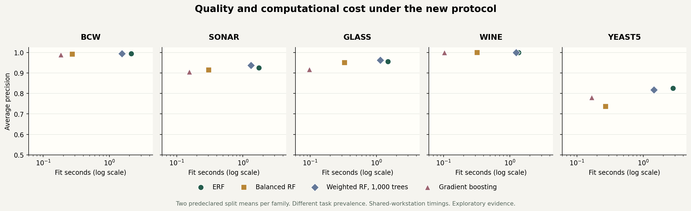

Sherwan Ali / Applied machine learning
Make a decision
you can defend.
Compare predictions, inspect the review workload and keep the limits of the evidence in view.
Same cases. Explicit assumptions.
Comparison
Bring the predictions you already have
Evaluate a CSV
Your file needs the true labels and one or more score columns. Higher scores must mean the positive class you name. In browser mode the CSV stays in this page.
Start with explicit labels
Load a CSV or the fictional example. Results and download options will appear here.
Fresh fits with separate validation and test data
Train on your machine
The public static demo needs no paid server. Fresh training uses the installed Python package on your own machine. Each model has a 60-second worker limit; only one training request runs at a time.
python -m rare_event_eval serveThen open http://127.0.0.1:8601. Install the package with its training dependencies first; see the project README.
A traceable fresh run
Training-only preprocessing. Validation-only threshold selection. Explicit failures. An untouched final test partition.
Research evidence
What did the controlled pilot show?
